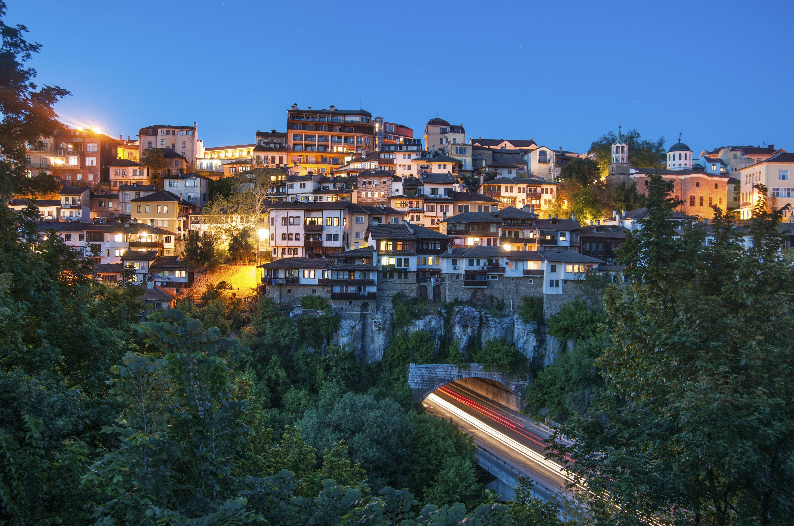
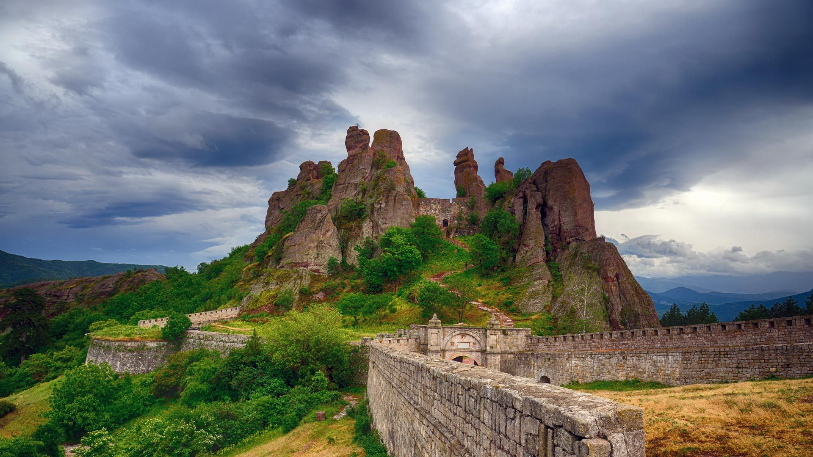

Bulgaria adalah sebuah negara yang terletak di Eropa Tenggara. Ini adalah salah satu negara di wilayah Balkan. Ibukota Bulgaria adalah Sofia. Negara ini memiliki sejarah yang kaya, budaya yang beragam, dan keindahan alam yang menarik.
Bulgaria adalah anggota Uni Eropa dan NATO, serta memiliki posisi strategis di Eropa Tenggara. Mata uang resmi negara ini adalah Lev Bulgaria.
Veliko Tarnovo

Veliko Tarnovo adalah sebuah kota di Bulgaria yang memiliki sejarah yang kaya dan berperan penting dalam sejarah Bulgaria.
Berikut adalah sejarah singkat Veliko Tarnovo:
Zaman Kuno : Daerah yang sekarang menjadi Veliko Tarnovo telah dihuni sejak zaman kuno. Bukti arkeologis menunjukkan bahwa tempat ini telah dihuni oleh suku Thracian dan Romawi.
Pendirian Ibukota Kedua Bulgaria : Pada abad ke-12, Veliko Tarnovo dipilih sebagai ibukota Kedua Bulgaria yang merupakan salah satu kerajaan terkuat di Eropa pada masa itu. Pemilihan Veliko Tarnovo sebagai ibukota menggambarkan pentingnya kota ini dalam sejarah Bulgaria.
Ketika Dinasti Tsar Ivan Asen II : Selama masa pemerintahan Tsar Ivan Asen II, Veliko Tarnovo mengalami masa kejayaan. Kota ini menjadi pusat budaya, politik, dan ekonomi di Bulgaria.
Benteng Tsarevets : Salah satu ikon Veliko Tarnovo adalah Benteng Tsarevets yang megah. Benteng ini menjadi pusat pemerintahan dan pertahanan kota selama masa kejayaannya dan telah menjalani pemugaran yang ekstensif.
Invasi dan Penjajahan Ottoman : Pada abad ke-14, Veliko Tarnovo mengalami invasi dan penjajahan oleh Kesultanan Utsmaniyah. Ini adalah masa-masa sulit dalam sejarah kota, dan banyak penduduknya terkena penganiayaan.
Pemulihan Kemerdekaan : Pada tahun 1877, Veliko Tarnovo menjadi saksi penting dalam Perang Rusia-Turki yang akhirnya menghasilkan kemerdekaan Bulgaria dari Kesultanan Utsmaniyah pada tahun 1908.
Hari Ini : Hari ini, Veliko Tarnovo adalah salah satu kota bersejarah yang paling penting di Bulgaria. Kota ini dikenal dengan bentengnya yang megah, arsitektur abad pertengahannya yang indah, dan kota tua yang menawan. Veliko Tarnovo juga menjadi tujuan wisata yang populer, dan banyak wisatawan datang untuk mengagumi warisan sejarah dan budayanya yang kaya.
Veliko Tarnovo adalah salah satu simbol penting dari sejarah Bulgaria, dan kota ini memiliki daya tarik yang kuat bagi mereka yang tertarik pada sejarah, arsitektur, dan budaya Bulgaria.
Rila Monastery
Biara Rila, atau Rila Monastery dalam bahasa Inggris, adalah salah satu biara paling terkenal dan bersejarah di Bulgaria.
Berikut adalah sejarah singkat Rila Monastery:
Abad ke-10 : Biara ini didirikan pada abad ke-10 oleh Santo Yohanes dari Rila, seorang pertapa dan santo nasional Bulgaria yang dihormati. Santo Yohanes memilih lokasi di lembah pegunungan Rila yang indah untuk mendirikan biara ini.
Pertumbuhan dan Pengembangan : Seiring berjalannya waktu, Rila Monastery tumbuh menjadi pusat agama dan kebudayaan yang penting di Bulgaria. Pada abad ke-14, biara ini menjadi tempat belajar dan penyalinan manuskrip. Selama periode ini, bangunan-bangunan baru dibangun dalam gaya arsitektur Bulgaria yang khas.
Keruntuhan dan Restorasi : Selama berabad-abad, Rila Monastery mengalami beberapa peristiwa yang mengancam keberadaannya, termasuk serangan oleh pasukan asing dan kerusakan akibat kebakaran. Namun, biara ini selalu berhasil direstorasi dan dipugar oleh para pemelihara setianya.
Abad ke-19 : Pada abad ke-19, Biara Rila mengalami pemugaran besar-besaran yang membuatnya menjadi struktur yang megah dan indah seperti yang kita kenal hari ini. Arsitektur Neo-Byzantine yang khas diperkenalkan selama periode ini.
Situs Warisan Dunia UNESCO : Pada tahun 1983, Rila Monastery diakui sebagai Situs Warisan Dunia UNESCO karena nilai sejarah, arsitektur, dan seni ikonografi yang luar biasa.
Pusat Budaya dan Pendidikan : Selain menjadi tempat peribadatan, Rila Monastery juga berfungsi sebagai pusat budaya dan pendidikan. Biara ini memiliki perpustakaan yang mengesankan yang mengandung banyak manuskrip langka dan artefak bersejarah.
Kesakralan dan Penerimaan Pengunjung : Hari ini, Rila Monastery tetap menjadi tempat ibadah bagi biarawan dan umat Kristen Ortodoks Bulgaria. Namun, biara ini juga menerima pengunjung dari seluruh dunia yang datang untuk mengagumi keindahan arsitekturnya, seni ikonografinya, serta keindahan alam sekitarnya.
Rila Monastery adalah salah satu monumen bersejarah paling terkenal dan penting di Bulgaria. Ini adalah tempat yang penting dalam sejarah agama, budaya, dan arsitektur Bulgaria, serta menjadi salah satu daya tarik wisata utama negara ini.
Benteng Belogradchik

Benteng Belogradchik, juga dikenal sebagai Benteng Kaleto, adalah sebuah struktur bersejarah yang terletak di dekat kota Belogradchik, Bulgaria.
Berikut adalah sejarah singkat Benteng Belogradchik:
Pembangunan Awal : Sejarah awal Benteng Belogradchik tidak sepenuhnya jelas, tetapi benteng ini diyakini telah ada sejak zaman Romawi atau zaman Bizantium. Beberapa elemen arsitektur dalam benteng ini menunjukkan pengaruh Romawi.
Peningkatan Selama Kekaisaran Ottoman : Pada abad ke-14, benteng ini diperluas dan diperkuat oleh Kesultanan Utsmaniyah yang mendominasi wilayah Balkan. Benteng ini memiliki peran strategis sebagai pertahanan melawan invasi dan serangan.
Abad ke-19 : Selama masa pemerintahan Kaisar Austria, benteng ini mengalami beberapa perubahan dan perbaikan. Pada abad ke-19, benteng ini menjadi bagian dari perbatasan antara Kekaisaran Austria dan Kesultanan Utsmaniyah.
Penggunaan Militer di Perang Dunia I : Selama Perang Dunia I, benteng ini digunakan untuk keperluan militer oleh Kekaisaran Austria-Hongaria. Ini adalah masa di mana beberapa modifikasi tambahan dilakukan pada benteng.
Peran Sebagai Situs Wisata : Setelah Perang Dunia I, benteng ini tidak lagi memiliki nilai militer dan mulai ditinggalkan. Namun, dengan waktu, Benteng Belogradchik ditemukan kembali sebagai situs wisata yang menarik karena bentuk-bentuk geologis yang unik di sekitarnya.
Situs Warisan Dunia UNESCO : Pada tahun 1984, Benteng Belogradchik, bersama dengan formasi batu alam yang mengelilinginya, termasuk Taman Nasional Belogradchik, diakui sebagai Situs Warisan Dunia UNESCO. Formasi batu alam ini adalah bagian integral dari daya tarik benteng dan menciptakan pemandangan yang sangat indah.
Katedral Notre Dame di Antwerp adalah salah satu situs bersejarah yang paling penting di Belgia dan terkenal karena seni dan arsitektur yang luar biasa. Lukisan dan karya seni di dalam gereja, termasuk karya-karya Rubens, menambah daya tarik budaya dan sejarahnya. Selain itu, katedral ini juga memiliki makam-makam terkenal dan menjadi tempat peziarahan bagi orang Katolik.